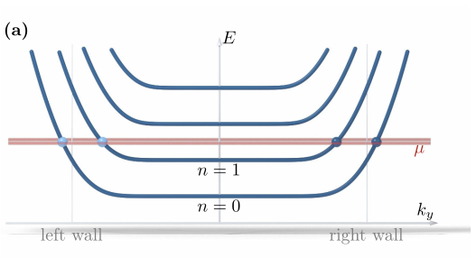
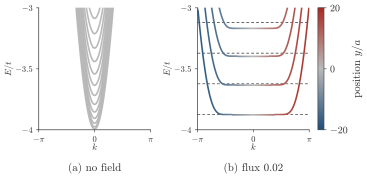

Page 6 of 16 of this session
3.6b The quantum Hall ribbon on the lattice
Do the flat Landau levels and the chiral edge states also appear in a lattice model, where we only diagonalize a matrix? We will now see that they do. A ribbon of the square lattice in a magnetic field has flat bands in the bulk and one branch at each edge that crosses the gap. At low field the spacing of the flat bands is the cyclotron energy of the continuum.
Let us look at a concrete model. We take a tight-binding square lattice with a perpendicular magnetic field and cut it into a ribbon of finite width, which has translational invariance along the ribbon but is finite across it. When we diagonalize this ribbon, we find the structure described above. There are flat bulk bands similar to Landau levels, and there are dispersive edge branches that cross the gap, with one branch confined to each edge and propagating in only one direction.
In the low-energy region the spacing between the flat bands approaches the equal spacing of a continuum two-dimensional electron gas in a magnetic field. So the tight-binding model reproduces the Landau problem in this limit, which we solve in Section 4.9. The notebook box below asks you to compute this band structure, with the flat bulk bands and the two edge branches that propagate in opposite directions.
We take a ribbon of the square lattice with first-neighbor hopping \(t\) and a magnetic flux \(\alpha\) through each plaquette, in units of the flux quantum \(h/e\). At low field, \(\alpha\ll1\), the flat bands at the bottom of the band are
\[\begin{aligned} E_n &\simeq -4t + \hbar\omega_c\Big(n+\frac12\Big), \\ \hbar\omega_c &= 4\pi\alpha\, t, \qquad n=0,1,2,\dots \end{aligned}\]
These are the Landau levels of the lattice, with the cyclotron energy \(\hbar\omega_c\). At each edge of the ribbon every flat band bends into one branch that crosses the gap, and the branches of the two edges have opposite velocities.
The steps From the ribbon in a magnetic field to equally spaced Landau levels
We take the lattice constant \(a\), the hopping \(-t\) and the gauge \(\mathbf A=(-By,0)\), which keeps the translational invariance along the ribbon, the direction \(x\). With the Peierls substitution (4.4) the hopping along \(x\) on the row \(y=ma\) gets the phase \(e^{\mp 2\pi i\alpha m}\), and the hopping along \(y\) does not change. Here \(\alpha=Ba^2/(h/e)\) is the flux through one plaquette in units of the flux quantum. For a Bloch wave \(e^{ikx}\) along the ribbon what remains is a chain across the ribbon, one for each \(k\),
\[H(k) = -2t\sum_m \cos(ka-2\pi\alpha m)\,|m\rangle\langle m| \;-\; t\sum_m\big(|m+1\rangle\langle m| + \text{h.c.}\big).\]
This is the matrix that we diagonalize. Its size is the number of rows of the ribbon, and the field is in an onsite energy that depends on the row.
The first step is the minimum of this onsite energy. It sits at the row \(m_0=ka/2\pi\alpha\), and close to it
\[-2t\cos(ka-2\pi\alpha m) \simeq -2t + t\,(2\pi\alpha)^2\,(m-m_0)^2 .\]
The second step is the hopping along \(y\). For a state that changes slowly from row to row it is the kinetic energy at the bottom of a band, \(-2t\cos(p_ya/\hbar)\simeq -2t+p_y^2/2m^*\), with the effective mass \(m^*=\hbar^2/2ta^2\). The two terms together are a harmonic oscillator centered at \(y_0=m_0a\),
\[H(k) \simeq -4t + \frac{p_y^2}{2m^*} + \frac12\,m^*\omega_c^2\,(y-y_0)^2, \qquad \frac12\,m^*\omega_c^2\,a^2 = t\,(2\pi\alpha)^2 .\]
The third step is to solve the last relation for the frequency. With \(m^*=\hbar^2/2ta^2\) we get
\[\hbar\omega_c = 2t\cdot 2\pi\alpha = 4\pi\alpha\,t,\]
which is the cyclotron frequency \(\omega_c=eB/m^*\) of a particle with the mass \(m^*\). The levels are \(-4t+\hbar\omega_c(n+\tfrac12)\) for every \(k\), so the bands are flat. The size of the oscillator state is the magnetic length,
\[\ell_B = \sqrt{\frac{\hbar}{m^*\omega_c}} = \frac{a}{\sqrt{2\pi\alpha}} .\]
The last step is the edge. The center \(y_0=m_0a=ka^2/2\pi\alpha\), which is \(k\ell_B^2\), moves across the ribbon when \(k\) changes. While it is farther than a few \(\ell_B\) from both edges, the energy does not depend on \(k\). When \(y_0\) comes to an edge the state is pressed against the wall and its energy goes up, which is the edge branch. At the opposite edge the energy goes up when \(k\) decreases, so the two branches have opposite slopes.
The expansion of the cosine needs that the phase changes little over one magnetic length, meaning \(\sqrt{2\pi\alpha}\ll1\). For \(\alpha=0.02\) the first spacing of the lattice is \(0.244\,t\) and \(4\pi\alpha t\) is \(0.251\,t\). For \(\alpha=0.005\) the two differ by less than \(1\%\).

Schematic 3.8 shows the same spectrum on the lattice, without and with the field.

g2_square_ribbon.py
In a Hall bar the Hall resistance on a plateau is \(h/e^2=25.8\) k\(\Omega\) divided by an integer. A plateau needs the chemical potential in a gap between two Landau levels, and a temperature with \(k_BT\) much smaller than this gap. For a long time the quantum Hall effect was observed only at the temperature of liquid helium. In graphene, which is a single atomic layer of carbon, it is measured even at room temperature. The measurement is in this article, which is the one given in the notebook session3.ipynb.
The honeycomb ribbon of the notebook box below is the model of this experiment. Its electrons are Dirac electrons, and the gap above their first Landau level grows as \(\sqrt{B}\), as we derive in Section 4.10. At low field it is larger than the gap \(\hbar\omega_c\) of a parabolic band, which grows only as \(B\).
The velocity of a Bloch state along the ribbon is the slope of its band,
\[v_n(k) = \frac{1}{\hbar}\,\frac{\partial E_n(k)}{\partial k},\]
with \(E_n(k)\) the energy of the band \(n\) at the momentum \(k\). In the spectrum of the ribbon the bulk Landau levels are flat. What current do the bulk states carry?
Show the answers
- A. ✗ False
This is false. Compare the first and the fifth Landau level. Both are flat, so both have \(\partial E/\partial k=0\), and neither carries current although their energies above the bottom of the band differ by about a factor of nine.
- B. ✓ True
This is true. The velocity along the ribbon is the slope of the band. A flat level has zero slope, so the current is carried only by the edge branches that cross the chemical potential.
- C. ✗ False
This is false. With the chemical potential in a gap, a voltage \(V\) between the edges gives the current \(C(e^2/h)V\) through the edge branches, which are the only states with a slope. The flat bulk levels have no slope and contribute nothing.
Each picture shows the bands of one ribbon of the square lattice. Only the magnetic field differs. The axes are the momentum \(k\) along the ribbon and the energy \(E/t\). Blue states sit at one edge and red states at the other edge. The flat bands are the Landau levels, and their spacing is
\[\hbar\omega_c = \frac{\hbar eB}{m^*}.\]
Here \(B\) is the magnetic field and \(m^*\) is the effective mass. Which ribbon has the largest field?
Show the answers
- A. ✗ False
This is false. The flat bands are \(0.12\,t\) apart, which is the smallest spacing of the three. This ribbon has the flux \(0.01\) per plaquette, in units of the flux quantum, and the spacing is close to \(\hbar\omega_c=4\pi\times0.01\,t=0.13\,t\).
- B. ✗ False
This is false. The flat bands are \(0.18\,t\) apart, for the flux \(0.015\) per plaquette. Another ribbon has only four flat bands in the same window, with a spacing of \(0.24\,t\).
- C. ✓ True
This is true. The spacing \(\hbar\omega_c\) grows in proportion to \(B\), and here it is the largest, \(0.24\,t\) for the flux \(0.02\) per plaquette. The flat part of each band is also the widest, since a larger field moves the state across the ribbon over a wider range of \(k\).
The lowest Landau levels of a square lattice have the spacing
\[\hbar\omega_c = 4\pi\alpha\,t,\]
with \(t\) the hopping and \(\alpha\) the flux per plaquette in flux quanta. We double the hopping \(t\) and keep the field. What happens to the spacing?
Show the answers
- A. ✗ False
This is false. Take \(\alpha=0.02\). For \(t=1\) the spacing is \(0.25\) and for \(t=2\) it is \(0.50\), in the same units, so it does not decrease. A larger hopping gives a lighter particle and not a heavier one.
- B. ✓ True
This is true. The effective mass at the bottom of the band is \(m^*=\hbar^2/2ta^2\), so a hopping twice as large gives half the mass, and \(\omega_c=eB/m^*\) doubles.
- C. ✗ False
This is false. The field alone does not fix the spacing. For \(\alpha=0.02\) we get \(0.25\) with \(t=1\) and \(0.50\) with \(t=2\), because the mass \(m^*=\hbar^2/2ta^2\) depends on the hopping.
The chemical potential \(\mu\) of a ribbon is in a gap between two Landau levels, and \(N\) edge branches cross it at each edge. A voltage \(V\) between the two edges fills the branches of one edge up to \(\mu+eV/2\) and the branches of the other edge up to \(\mu-eV/2\). Compute the current along the ribbon, and show that it is \(I=N(e^2/h)V\) for any shape of the branches.
Solution
A state of the band \(n\) with momentum \(k\) has the velocity \(v_n(k)=\hbar^{-1}\partial E_n/\partial k\). A ribbon of length \(L\) has \(L\,dk/2\pi\) states in the interval \(dk\), and each filled state gives the current \(e\,v_n/L\). So a piece of one band that is filled between the energies \(E_1\) and \(E_2\) carries
\[I_n = e\int\frac{dk}{2\pi}\,v_n(k) = \frac{e}{2\pi\hbar}\int_{E_1}^{E_2}dE = \frac{e}{h}\,(E_2-E_1).\]
The velocity cancels against the density of states of a one-dimensional band, so the result does not depend on the dispersion.
When both edges are filled up to the same energy the total current is zero. The reason is that every band is then filled between two points with the same energy, so the integral of its velocity vanishes, and the currents of the two edges cancel. What is left is the window of width \(eV\) between the two fillings, where only the branches of one edge are filled. Each of them gives \((e/h)\,eV\), and the \(N\) branches give
\[I = N\,\frac{e^2}{h}\,V .\]
This is the Hall conductance of (3.4) with \(C=N\), obtained by counting branches. The current flows along the ribbon and the voltage is across it, so \(V/I=h/Ne^2\) is the Hall resistance, which is \(25.8\) k\(\Omega\) for \(N=1\). The velocity of the edge states, the width of the ribbon and the shape of the edge do not appear, and this is why every sample gives the same plateau. For a calculation it means that we only need to count the branches that cross the chemical potential at one edge.
Notebook check-in: session3.ipynb, “From electrons in a ribbon to the quantum Hall state” (Core), “The quantum Hall effect in graphene” (Core), and “Localization of the edge states in the quantum Hall effect” (Challenge)
Build a square-lattice ribbon, and then a honeycomb-lattice ribbon, with a magnetic field and reproduce the figure described above, with flat Landau-level bulk bands and chiral edge branches. Check the propagation direction of the edge states at positive and at negative energy on each edge, which is the chirality argument of Section 3.6. Then look at how the edge states localize in real space as a function of energy, and how this localization changes for a weaker field or a narrower ribbon.
Try it. Change h.add_orbital_magnetic_field(0.01) to -0.01 and run the cell again. The color gives the position across the ribbon. Follow the branch that is localized at one edge and crosses zero energy. Its slope changes sign when the field is reversed, as in the figure of Section 3.6.
- In Section 4.11 we build the same ribbons, on the square lattice and on the honeycomb lattice, with the Peierls substitution (4.4).
- In Section 4.10 the honeycomb ribbon gives the Landau levels of Dirac electrons, which grow as \(\sqrt{B}\).
- In Section 4.5 the number of edge branches that cross the chemical potential is the number of filled Landau levels.